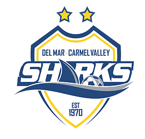

The activities that I focus on outside of school are soccer, dance, and piano.
Three times a weeks I have soccer practice. I am on the ecnl team for 07. Because our team travels together all time for games, we have created a great team culture. I learned about team work and this helps me with group projects at school.

Every monday I have dance practice where I learn a type of classical indian dance called kathak. I also practice a dance called bollywood. To help raise money for girls to have an education, I performed a dance at Open Mic Night.